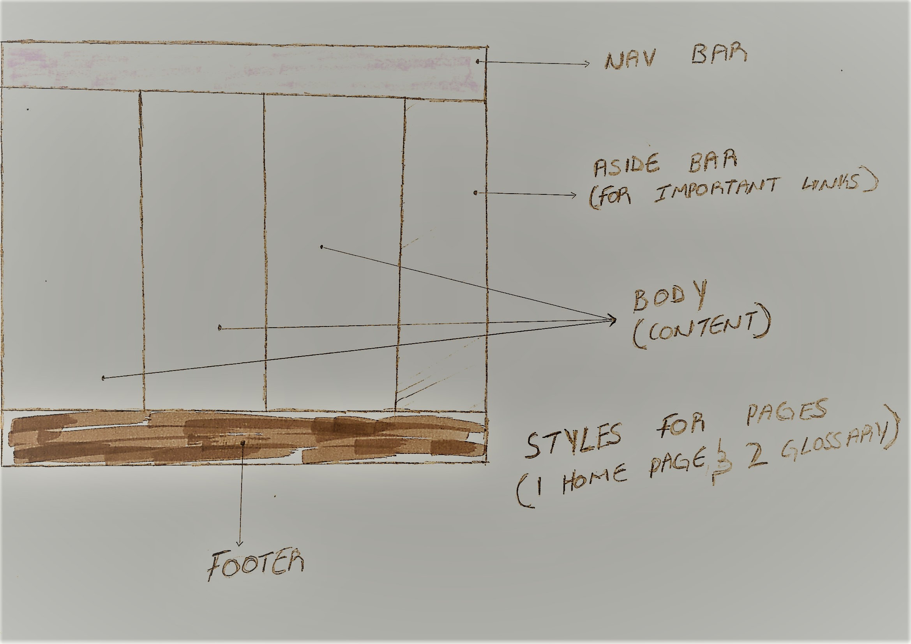
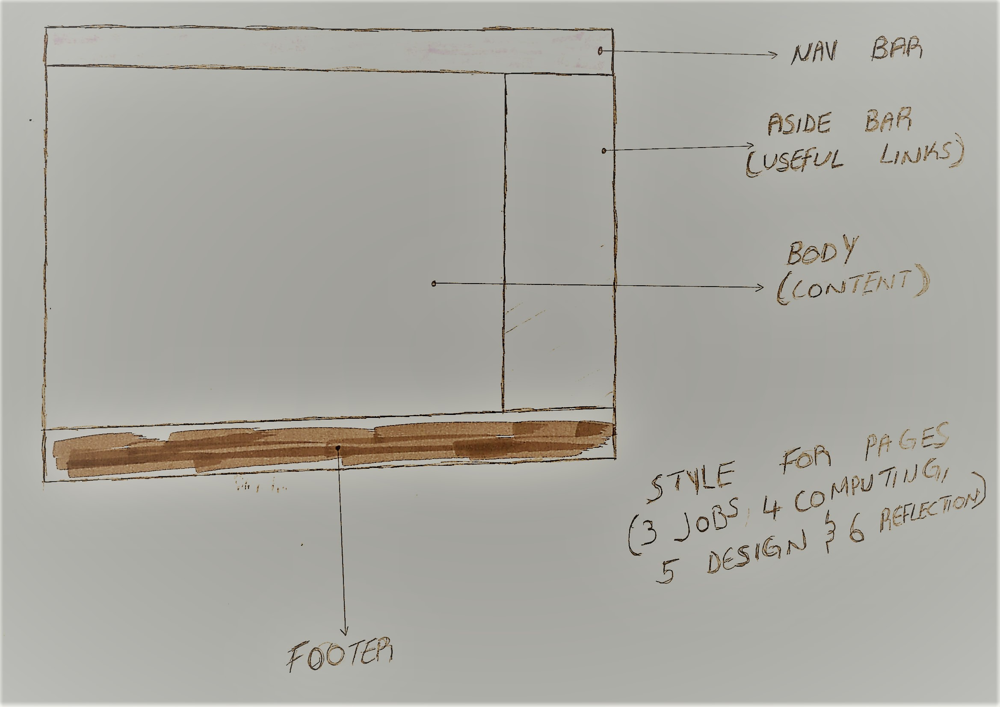

DESIGN
The picture above shows the Mercedes site, I choose this site because of colours. I was struggling to decide on what colours to use, I really like the combination of green and black on the website. This site influenced the colour on my site.
This wireframe design is based on a class example that I modified, I changed the colour, the body style for the Third page (jobs), fourth page (computing) & sixth page (reflection).
Wireframe design, modified class example changed colours but kept the body style, because I like the column layout, this is the style i used for my home index page one and glossary page two.
I worked with Ifrim on the assignment, we based our research on content for the pages, we looked at Mozilla Web dev, Codecadmey and W3 schools for the glossary page, we then looked up job sites for a comparison on different computing jobs and came up with a conclusion, I focused on the meaning of a Web developer and Games developer, requirements in industry for these two roles, and I based my conclusion on the difference of the two job roles. We then worked on our bio’s for the landing page.